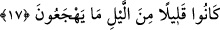

güzel davrananlardı.
Onlar, Rablerinin kendilerine verdiği mükâfâtı almaya hak kazanarak ve ondan hoşnut
kalarak Rablerinin nimetine ererler. Şöyle ki, Allah’ın onlara verdiği her şey güzel, hoş
ve hüsn-i kabul görmüş olup onda reddedilebilecek hiçbir şeye rastlanılmaz. Zira
verilen o nimetler, güzelliğin en üst seviyesindedir. Nitekim “... Sadakaları Allah alır”
(et-Tevbe 9/104) âyetinin mânâsı “Allah sadakaları kabul eder ve bundan hoşnud kalır”
şeklindedir.
Âlimlerden biri âyetle alâkalı şu izahı yapar: Onlar bugün dünyada mâsivâdan
arınarak yalnız Allah’a yönelmiş kalpleriyle O’nun çeşit çeşit lütuflarını alırlar. Yarın
âhirette de Rablerinin kendilerine verdiği bağışları alırlar.
Daha sonra bu nimetleri hak etme sebepleri dile getirilerek âyetin devamında:
“Çünkü onlar bundan önce” cennete girmeden; yâni dünyada “güzel işler yaparlardı”
buyrulmaktadır.
17. Geceleri pek az uyurlardı.
“Hücû’”, gündüz değil özellikle “gece uykusu”na verilen isimdir. “Onlar gecenin az
bir bölümünde uyurlardı.” Veya “Onlar gece vakitlerinde az bir uykuyla uyurlardı.”
Yâni onlar gecenin büyük bir bölümünde zikir ve namazla meşgul olurlar, az bir
bölümünde uyurlar, sabaha kadar uyuyan avâre ve gafiller gibi olmazlardı.
Bazı tasavvuf erbâbı bu âyette şöyle bir işârî mânâ olduğunu söylemişlerdir: “İhsan
ehli, muhabbet ve müşâhede ehlidir; onlar gece uyumazlar. Çünkü azlık, ademi yâni
yokluğu ifâde eder. Onların fazla uyumamaları, Rasûlullah (s.a.)’in: “Âlimin uykusu
ibâdettir”[6] buyruğu üzeredir. Kim ibâdette bulunursa o uyumaz.
Bu âyetin, Rasûlullah (s.a.)’in mescidinde namaz kılıp sonra aralarında iki mil ve
yıldız saatiyle bir saatlik bir zaman bulunan Kubâ mescidine giden ensar hakkında
indirildiği söylenmiştir.
Kâşifî şöyle demiştir: Meşhur olan şudur ki, onlar yatsı namazını edâ etmeksizin
uyumazlardı ve namazın süresini uzun tutarlardı.
Ca’fer b. Muhammed’den şöyle dediği nakledilmiştir: Her kim gün batımıyla yatsı
arasında yatmayıp yatsı namazına kalırsa o da bu gruba dahildir.
Ebu’d-Derdâ (r.a.)’nın şöyle dediği rivâyet edilmiştir: Rasûlullah (s.a.)’e hangi gece
namazının daha faziletli olduğunu sorunca bana: “Gecenin yarısında yapılanıdır; ama
bunu yapan çok azdır” diye karşılık vermiştir.[7]
Sûfî şâirlerden bir şöyle demiştir:
Nergis gaflet uykusundayken bülbül yüz visal buldu